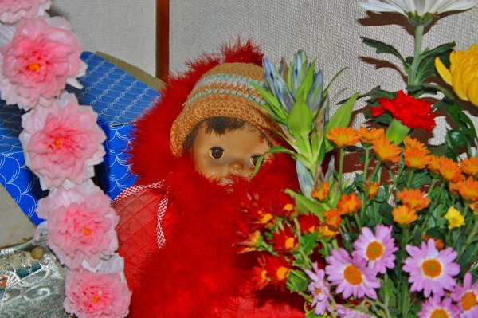
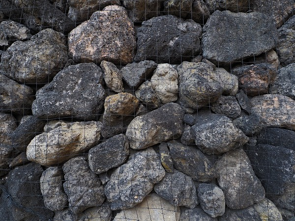
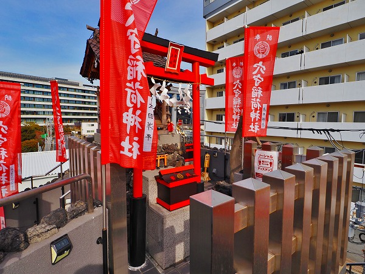
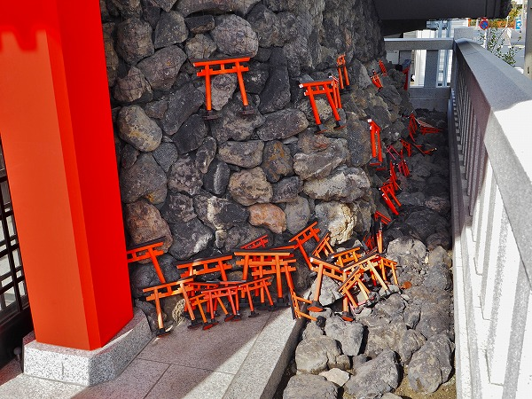

さて。
今回は
お話が長くなることを先にお詫び申し上げておく。
ハナシは東京の玄関口、羽田空港の近くにポツンと立つこの鳥居から始めさせていただこうか。
多摩川の河口付近、羽田空港と「本土」の間に流れる海老取川が多摩川に合流する辺り。
つまり今はほぼ全域が羽田空港となってしまった「島」の隅っこに建つ鳥居である。
この鳥居、現在では
旧穴守稲荷大鳥居と呼ばれている。
羽田の大鳥居…ある一定の年齢以上の方なら「ははーん」とうなずかれる方も多かろう。
この鳥居、かつては
呪いの鳥居としてその名を馳せたのである。
最初にお詫びしたので遠慮なくこの鳥居の来歴からじっくりとハナシをさせていただきますが、この大鳥居、今の羽田空港の敷地にかつてあった
穴守稲荷という神社の鳥居だったのだ。
江戸時代。文化文政の頃、現在の羽田空港付近は干潟だったが、そこを干拓して田畑を開発しようと堤防を造り開墾をすることになった。
その後、度重なる水害からこの干拓地を守るために堤防の穴を防ぐという意味で稲荷が祀られるようになったという。
その後、明治時代になると社殿が建ち、徐々に信仰が広がりをみせ、川崎大師とタメを張る程の有名神社にレベルアップしていくのだ。
その後、この地は鉄道の敷設などによって
東京有数の行楽地となっていく。
昭和初期になるとプールやオート、競輪、競馬場などが出来て、一大歓楽地となり、穴守稲荷も行楽地として名所化していく。
さらに広大な干拓地であったことから運動場や飛行場も造られることになった。
そして終戦。
その直後に、米軍の羽田空港接収計画によってかつて穴守稲荷があったエリアの住民3000名以上に
48時間以内の強制撤去の命令が下ったのだ。
信じられるだろうか？48時間以内の強制撤去って。無茶にも程があるよね。
こうして穴守稲荷は移転させられ、神社全体が取り壊されることになったのだが、大鳥居だけは取り壊そうとする度に工事関係者に次々と不幸な事が起こり、結局、残されることになった。
旧羽田空港ターミナルをご存知の方々にとってはターミナル前の駐車場に赤い鳥居がそびえている光景は記憶にあるだろう。
かく言う私も若い頃は旧羽田空港ターミナルを利用したクチなので、空港に行く度に「ああ、アレが呪いの鳥居かあ」と子供の頃読んだオカルト本の数々のエピソードを反芻したものだった。
今にして思うと、強制撤去させた進駐軍に対する住民の声なき抵抗として大鳥居の呪い話はまことしやかに広がっていったのではなかろうか。
その後、滑走路拡張によって1999年現在地に移転されることとなったのである。
その時も「あの呪いの鳥居がついに移転！」的な記事も見かけたが、この時は何事もなく無事に移転したようだ。
土地の記憶を消され、住民も退去させられ、神社も移転し、穴守稲荷と全く関係のない場所にポツンと立つ大鳥居。
そんな鳥居の扁額には
「平和」と記されてあった。
何ともやりきれない思いが詰まった鳥居だった。
その鳥居の川向うには不思議なお堂が水上に建っている。
折角なので寄り道していきましょう。
海老取川と多摩川の合流地点にそのお堂はある。
弁天橋を渡ってそのお堂に行ってみた。
ここは五十軒鼻と呼ばれる場所。
↑左が海老取川、右が多摩川である。奥の方で多摩川は東京湾に合流する。そんなところ。
ブリッジを渡り、小さなお堂の中にお邪魔しますよ、っと。
中には仏像が安置されていた。
このお堂は
五十軒鼻無縁仏堂と言い、ここに漂着した水難者を祀るために建てられたという。

この場所は古くから多くの水難者が流れ着く場所だった。
特に関東大震災や東京大空襲の際は多くの人々がこの辺りに流れ着いたという。
その霊を慰めるためのお堂なのだ。
傍らには古ぼけた卒塔婆が漁船をバックに並んでいた。
かつてこの辺りから天空橋辺りにはビックリするほど巨大な電飾看板がズラリと並んでいた。
その看板の下に漁船が並ぶ光景はまるでブレードランナーみたいに超カッコイイ光景だったのだが、今はその看板群も姿を消してしまった。
穴森の町も神社も看板も
栄えているときは永遠に続くと思えるが、いざとなるとあっという間になくなるものなのだ。
で、移転した
穴守稲荷を訪ねてみる。
場所は先程の大鳥居から北西に数百メートル。
周囲は空港に近い事もあって物流関係のオフィスなどが多い。
一方、神社の西側は住宅や個人商店が並ぶ庶民的なエリアだ。
恐らく今の羽田空港がある場所に住んでいた住民の方々も多く住んでいるのではなかろうか。
本殿の右側には赤い鳥居がズラリと並んでいた。
戦前の穴守稲荷の写真を見ると、そこにも沢山の鳥居が並んでいたようだ。
規模としては随分縮小された感はあるが、それでも地元の氏子はじめ多くの信仰を集めている感じは伝わって来る。
鳥居の向こうに何やらただならぬ雰囲気が。
そこには奥の宮という建物がある。
その中に
とてつもなく乱雑にミニ鳥居が積み上げられているのだ！
一体何故こんなことになっているのか。
詳しい理由は分からないが、後から後から奉納する人が上に乗せていくのだろう。
埃の積もり方からして新しい鳥居ばかりではないようだ。
戦前の穴守稲荷でもミニ鳥居が奉納されていた写真があったが、それは綺麗に並べられていたぞ。
その乱雑さは整然と並んだ鳥居よりもある種の凄味を感じさせてくれる。
信仰の凄味というか人間の欲望の凄味というか…。
奥には千羽鶴。
その奥には沢山の陶器の狐が並んでいる。
恐らく個人宅にあって、何らかの事情で必要なくなった狐を引き取っているのだろう。
その密集具合と先程のミニ鳥居のモッシュ具合が入り混じってアタマの中がグルグルしてくる。
因みにここでは招福砂という砂を配布している。参拝者が持ち帰り、砂を撒き清めるのだという。
奥の宮の裏手には小山が築かれている。
黒ボク石で覆われているので
まるで富士塚のようだ。
実は戦前の穴守稲荷にも築山があって、富士山信仰の講のひとつである木花講が中心となって造られたという。
昔の写真を見ると、かつての築山もまた黒ボク石で覆われているように見える。
発起したのが富士講であれば当然と言えば当然なのだが。
むしろ富士山のミニチュアである富士塚を造らなかったのが不思議なほどだ。
いずれにせよこの築山も戦前の築山に倣って黒ボク石による山を造ったのだろう。
そういう意味では富士信仰が色濃くにじんだ築山であると言えよう。
かなり本格的な築山である。
途中には様々な社があり、稲荷神社独特のごった煮神社っぽい雰囲気に満ちている。
もちろん狐の石像もあちこちに。
山頂には御嶽神社。
これだけ富士塚っぽい築山なのでてっきり浅間神社があるのかと思ったら御嶽神社でした。
背後には環状八号線があり、大型車がガンガン走っている。そんな場所だが、ここだけは別世界だ。
空港があったばかりに米軍や国に翻弄されたこの神社の不思議な運命について思いを馳せてしまう。
奥の宮の近くには納まりきれなかった狐が沢山並んでいた。
さらに神社の南参道付近にも狐の石像がたくさんいた。
体育館の裏で煙草を吸っている不良みたいな目つきをした狐が多かったような気がします…
2008.06. 2008.11.
…で、時は流れて盛大に空回ったオリンピックも終わった2022年の冬。
ある筋から穴守稲荷が一部リニューアルした、という情報を聞き、14年ぶりに穴守稲荷に再訪してみました。
拝殿付近は玉垣が造られた以外はそんなに変わっていないような気が…。
かつて目つきが悪い石狐達がたむろっていた辺りには台座だけが残っていた。
これは、つまり撤去されちゃったという事なのかな？
拝殿脇の鳥居も相変わらず。
ん？
んん？
その先に何かがあるぞ！
おおお、何か凄いアバンギャルドなタワーが出来てるじゃないの！！
以前あった奥の宮とその背後にあった築山が一体化して、さらに高層化しているではないの！
しかも幟が立っていて
まるで戦国時代の砦みたいにカッコイイじゃないの！
早速1階のかつて奥の宮だった部分に入ってみる。
乱雑に積み上げられていたミニ鳥居の姿はなく、同じサイズのミニ鳥居と狐が整然と並んでいた。
ああ、やはりこういう感じになるのね。
私はこれまで数々の寺社の改築を目撃してきた。
大抵が小綺麗になった代わりに
信仰自体のダイナミックさが失われてきた。
この手の改築に関して賛成も反対もないが、全体の傾向として私が好きな乱雑な風景が消えていくのは悲しい事だ。
かつてはミニ鳥居がこれでもかと言うほど乱雑に積み上げられていて、その狂気ともいえる混乱具合が逆に信仰の篤さを象徴していたのだが、何だか今回はスッキリ収まっちゃって落ち着いちゃったなあ、
と言う印象を受けてしまった。
まあ、ある意味仕方がないよね。
でも、やっぱりかつての昭和ストロングスタイルを経験してきた身としてはやはりあの猥雑でゴチャゴチャした雰囲気が味わえなくなるのはチョット悲しいな、という個人の勝手な感想でございます。
上を見上げると塔の中は吹き抜けになっていることが判る。
塔の隣、かつて築山があったエリアもすっかり綺麗に整備されている。
それでもかつて築山にあった板碑が残されている。
奥の宮にあったミニ鳥居も並べられている。
そしてかつては体育館裏の不良よろしくガンを飛ばしまくっていた狐軍団が
狐塚としてすっかり更生して行儀よく並んでいるではないか！
おお、君たちここにいたのか！相変わらず目つきは悪いけど廃棄されなくてよかったなあ。
そんな狐塚とタワーの間に階段があって、しかも矢印で誘ってくれている。
よし。行こうじゃないの。
別に矢印があろうとなかろうと行きますけど。

壁面は全て黒ボク石。
これは想像だが、前の築山に大量に使用されていた黒ボク石を再利用したのではなかろうか？
…と、思えるほど大量の黒ボク石で壁面が覆われていたのである。
最初の階段を上ると、左側、つまり先程あった狐塚の上に4つの社が並んでいた。
手前から築山稲荷、幸稲荷、末廣稲荷、航空稲荷の4社。
講の石碑の前にもミニ鳥居が置かれていた。
こうして奥の宮以外にも
不揃いな鳥居たちが点在している。
さらに石の砦のようなタワーを上って行こう。
またしても階段に矢印が。
言われなくても上りますとも！
回り込むようにして階段を上っていくと頂上が見えてきた。

これが頂上にある
穴守稲荷上社である。
上社の前を過ぎると御嶽神社の石碑が。
因みにこの石碑、先程上ってきた階段から見るとこんなオーバーハングした位置にある。
かなりギリギリな場所に建つ石碑なのだ。
その石碑の先には御嶽神社。
鳥居の先には注連縄を張られた自然石が鎮座している。
ここがタワーの最上部な訳だが、周囲には巨大な建物が数多く見られる。
ちなみに御嶽神社の後ろにある巨大な建物はヤマト運輸の物流基地だ。
下を見れば、先程潜ってきた千本（まではないけど）鳥居。
中々善き眺めであった。満足。
帰りは別ルートで先程の狐塚のあった所に戻って来る。
んん？という事は行き帰りが別ルートの二重螺旋階段から成る構造…つまり…
さざえ堂、ってことじゃないの！
途中に寄り道フロアなどがあり、すぐに気付かなかったけどこれは見た目のインパクト以上に凄いタワーだぞ！

狐塚に戻ると沢山の個性的な狐たちが出迎えてくれる。
ちょっとした物陰にも狐の石像が置かれている。
そしてその裏には
かつての奥の宮の乱雑に積み上げられたミニ鳥居を彷彿とさせるような具合でミニ鳥居が積まれていた。
こういうのって普通、社殿を新しくしたら整理したがるじゃないですか。
そこを敢えて
かつての乱雑具合をわざわざ再現しているところに喝采を送りたい。
もちろん規模は小さくなってはいるが、
祈りのカタチの集積はグロテスクになるという宗教的な真理をここを再現した方はよーく判ってらっしゃるんだと思う。
狐塚の奥には福徳稲荷と呼ばれるコーナーがあった。
これもかつて築山の山中にあった稲荷だ。

改めて奥の宮の右側を覗き込んでみると、ここにも不揃いの鳥居たちが乱雑に積まれていた。
この先、ミニ鳥居が奉納され続け、この建物がミニ鳥居でびっしり覆われ真っ赤な塔になることを陰ながら期待しておりますぞよ。
それにしても凄い塔だった。
江戸後期に関東で流行った2大娯楽系信仰装置である富士塚とさざえ堂をリミックスした空間が21世紀に登場するとは…
まさかお稲荷様も気付くめえ！
最高。
帰りに気付いたが境内の案内図もリニューアルされていた。
中々ポップで素敵で、そして何より境内の複雑なアレコレを簡潔に説明してあり、素晴らしい案内板だと思った。